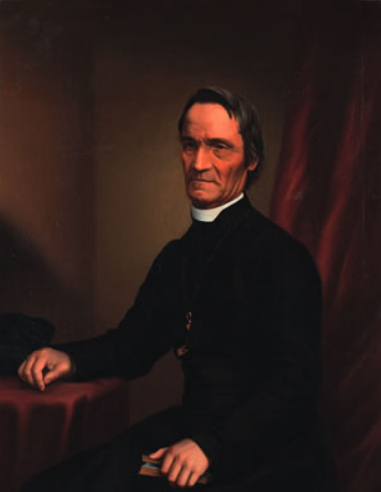

This website talks about the acts and works of Father Antoine Garin. The French Catholic missionary who dedicated his life to the education and guidance of Māori communites and european settlers in New Zealand.
